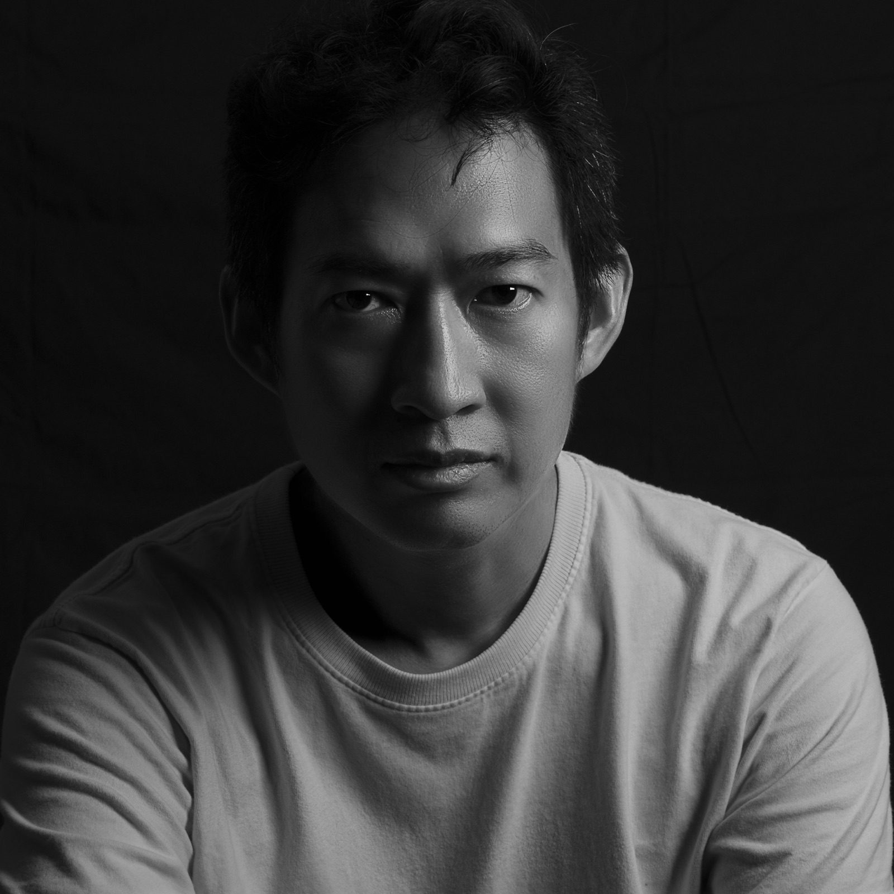

ไพ่ทาโรต์
ไพ่ไม่ได้ตัดสินใจแทนคุณ
แต่ช่วยให้คุณมองเห็น
อ่านไพ่เพื่อทำความเข้าใจตัวเอง และค่อย ๆ คลี่คลายสิ่งที่ค้างอยู่ในใจ · สำรับ Dan Tarot 78 ใบ และหนังสือเปิดไพ่ ฟังใจ
แนวคิด
- ไพ่เป็นกระจกบานหนึ่ง ให้คุณเห็นตัวเองชัดขึ้น
- ไม่ทำนาย แต่ร่วมสะท้อน
- คำตอบสุดท้ายเป็นของคุณเสมอ
อ่านไพ่อย่างเป็นขั้นตอน เพื่อให้ทุกคำถามได้รับเวลาของมัน
- เปิดไพ่ทาโรต์ทีละคำถาม มองเรื่องเดียวกันจากหลายมุม
- ปิดท้ายด้วยไพ่ Oracle 1 ใบ เพื่อสรุปทิศทาง
เกี่ยวกับผู้อ่านไพ่

ศิลปะทุกแขนงล้วนเกี่ยวพันกับความเป็นมนุษย์ ภาพวาดบันทึกสิ่งที่ตาเห็นและใจรู้สึก ภาพถ่ายเก็บช่วงเวลาที่คนคนหนึ่งเป็นตัวเองมากที่สุด เสียงเพลงและถ้อยคำพาไปถึงสิ่งที่พูดออกมาตรง ๆ ไม่ได้
แดน ดนย บุญทัศนกุล ทำงานจิตรกรรม ภาพประกอบ ภาพถ่าย และงานเขียน และเคยสอนศิลปะในมหาวิทยาลัย เครื่องมือแต่ละอย่างพาไปสู่คำถามเดียวกัน คือสิ่งเหล่านั้นเปิดมุมมองของเราต่อโลกและต่อตนเองอย่างไร
การอ่านไพ่ทาโรต์เป็นอีกวิธีหนึ่งของการทำความเข้าใจนั้น ภาพบนไพ่เปิดทางให้เรื่องที่เก็บไว้ได้ถูกพูดถึง ทุกครั้งที่เปิดไพ่ เจ้าของคำถามและผู้อ่านไพ่ต่างก็ได้เรียนรู้และทำความเข้าใจความเป็นมนุษย์ที่ดำรงอยู่ในตนเองและในอีกฝ่ายไปพร้อม ๆ กัน
เริ่มจากคำถามหนึ่งข้อ แล้วค่อย ๆ มองไปด้วยกัน
สอบถามทางอีเมล →